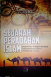

Judul Buku
Diulas oleh Dinda Azzahra S pada 2 Mei 2022
- Judul Buku : Sejarah Peradaban Islam
- Nama Pengarang: Mursal Aziz, M.Pd.I dan Siti Fatimah, M.Pd.I
- Kategori : Buku Sejarah
- Bidang Ilmu : Sejarah Islam
- ISBN : 978-602-69-0324-2
- Ukuran : 24 X 16 cm
- Halaman : 203 halaman
- Penerbit : FEBI UIN-SU Press
- Tahun Terbit : 2018.
Sejarah Peradaban Islam merupakan buku karya Mursal Aziz, M.Pd.I dan Siti Fatimah M.Pd.I yang di terbitkan guna memberikan kita sebagai pembaca pemahaman mengenai segala asal usul peradaban dan perkembangan agama Islam. Buku ini dapat membantu mengedukasi kita mengenai apa saja yang terjadi pada zaman dahulu dan apa saja yang sudah terlewati selama masa dikenalnya agama Islam oleh seluruh makhluk bumi hingga dapat menyebar ke seluruh penjuru dunia hingga saat ini. Ada banyak sekali peristiwa-peristiwa yang telah dilewati dari masa ke masa. Mungkin banyak dari kita yang masi kurang mengetahui mengenai apa saja cerita-cerita dan kejadian yg telah di lalui para ulama dan pemeluk agama Islam terhadulu. Oleh karena itu, dalam buku ini cukup merangkum keseluruhannya.
Buku dengan tebal 203 halaman ini sangat direkomendasikan untuk dibaca. Dalam buku ini ada banyak sekali ilmu-imu pengetahuan yang sangat menarik dan pastinya sangat kita butuhkan. Ada banyak motivasi dan edukasi yang dapat kita petik dalam buku ini. Tidak hanya ilmu-ilmu pengetahuan mengenai Islam saja, dalam buku ini juga banyak sekali pelajaran-pelajaran hidup yang mungkim seluruh manusia merasakannya. Oleh karena itu, buku ini juga dapat memberikan kita pelajaran-pelajaran berharga mengenai pentingnya hidup dan bagaimana cara kita melewatinya dan bagaimana kita mengembangkannya agar menjadi lebih baik dan berkualitas.
Kelebihan pada buku ini adalah buku ini memiliki bacaan yang dapat memberikan kita semangat dalam membangun budaya ilmu dan mendatangkan kebaikan umat dalam mengembangkan pendidikan yang berkualitas di berbagai lembaga pendidikan. Dengan semangat tersebut kita dapat meningkatkan kecintaan kita terhadap agama Islam, Rasukullah SAW.
Tiap bab dalam buku ini mencakup sejarah-sejarah yang berbeda, bahkan sejarah masuknya Islam ke Indonesia pun ada pada buku ini. Dimulai dari bab 1 yang menceritakan mengenai Islam pada masa awal, dimana Islam pertama kali muncul sejak kelahiran Nabi Muhammad SAW. Pada masa itu, Nabi Muhammad SAW mendapatkan wahyu untuk pertama kali dari Allah SWT sebagai petunjuk untuk mengajak seluruh umat nya memeluk agama Islam. Wahyu pertama yang di turunkan adalah Q.S. Al-Alaq (1-5) yang berisi mengenai perintah untuk membaca Al-Qur'an. Dan wahyu kedua yang diterima adalah Q.S Al-Muddastsir (1-5) yang merupakan perintah unthk meninggalkan dosa. Lalu nabi pun mulai melakukan dakwah nya di sekitaran kota Mekkah dan Maddinah. Namun, kegiatan itu tidak berlangsung mulus. Mengingat bangsa Arab sebelum hadirnya Islam memiliki peradaban yang tidak tertata dan tidak mempercayai ajakan Nabi Muhammad SAW. Banyak sekali kejadian yang dialami Nabi Muhammad SAW mulai dari diusir, dilempari kotoran dan sebagainya. Sehingga pada masa itu Nabi Muhammad SAW melakukan dakwah secara sembunyi-sembunyi. Hingga akhirnya beliau melakukan dakwah secara terang-terangan dan banyak pengikutnya yang mulai taat kepada perintah Allah.
Dalam buku ini terdapat hal menarik yang dapat kita petik, contohnya pada halaman 19. Terdapat Nilai-nilai pendidikan yang dapat kita ambil dari dakwah Rasulullah SAW. yaitu Kesabaran, ada banyak kejadian yang dialami Rasulullah dan tidak sedikit yang berjalan buruk. Namun dengan kesabaran yang ia punya hingga akhirnya ia dapat menyebarkan dakwahnya sampai menjadi agama terbesar di muka bumi ini hingga sekarang. Dari sini kita bisa belajar bahwa dengan kesabaran, apapun yang kita harapkan, dan kita inginkan pasti akan tetwujud. Dengan kesabaran kita akan mendapatkan segala sesuatu yang memang milik kita. Kesabaran ini haruslah kita tanamkan dalam diri kita dan kita terapkan dalam kehidupan sehari-hari.
Ada juga sifat yang harus kita miliki yaitu Adil, Jujur, dan Terpercaya. Sebagai masyarakat yang hidup berdampingn denan masyarakat lain kita harusny memiliki sifat tersebut. Karena kita merupakan makhluk sosial, dimana suatu saat kita juga akan bergantung pada orang lain. Oleh karena itu agar kita dapat diberikan perilaku yang baik oleh sesama, ketiga sifat tersebut sangat penting kita tanam dalam diri. Bagaimana orang lain akan membantu jika kita tidak dapat dipercaya? jika kita tidak bisa berlaku jujur? Orang pun akan muak dengan kita jika kita hanya mementingkam diri kita dan tidak adil kepada yang lain.
Pada zaman dahulu merupakan zaman dimana kita masih mengalami perperangan dimana-mana. Perkembangan Islam pun perkendala oleh masalah ini. Banyak sekali perperangan yang terjadi ditengah-tengah dakwahnya Rasulullah SAW. Mulai dari perang Badar, Uhud, Kandaq, Hunain, Thaif, Tabuk, Perang salib, dan sebagainya. Semua terangkum dalam buku ini. Buku ini menceritakan bagaimaa dahsyatnya Perang Badat yang terjadi yang mengugurkan 14 orang Islam dan mereka masuk dalam kategori mati syahid (mati dalam keadaan baik; Mati saat perperangan demi kebaikan/membela Islam). Ada perang Uhud yang menggugurkan 70 orang umat Islam dengan sadis dimana dada mereka dibelah dan hatinya dimakan oleh Istri Abu Sofyan karena dendam. Dan banyak lagi perjuangan-perjuangan pahlawan umat Islam pada masa itu.
Buku yang di terbitkan pada tahun 2018 ini juga memuat bagaimana sejarahnya agama Islam masuk ke Indonesia. Islam masuk ke Indonesia di percaya sudah ada sejak abad ke 7 Masehi melalui pedagang-pedagang Arab yang masuk ke Indonesia. Pertama kali pengaruh Islam masuk pada daerah Sumatera Utara atau dahulu disebut Samudra Pasai. Ada banyak cara-cara islamisasi yang dilakukan di Indonesia seperti Perdagangan, Perkawinan, Tasawuf, Pendidikan, Kesenian, dan Politik. Salah satu tokoh pendakwah yang terkenal di Indonesia adalah Walisongo. Buku ini memuat sejarah kehidupan dan perjalan mereka yang cukup berperan baik dalam masuknya ajaran Islam yang hingga saat ini masih merupakan agama mayoritas di Indonesia.